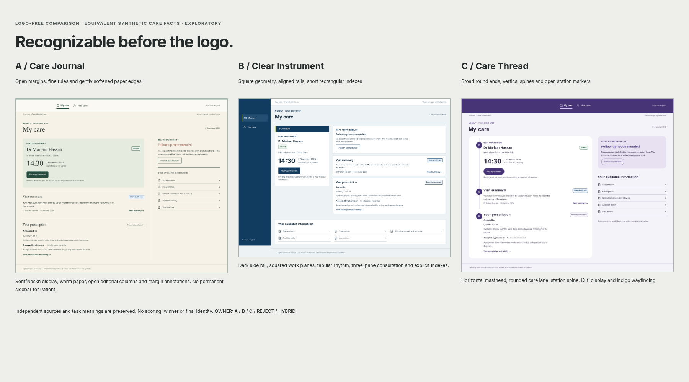

EXACTLY THREE DIRECTIONS / NO SCORES
Compare the systems.
Same care facts. Three ways of organizing attention. No direction has been selected.
Logo-free identity test

| Dimension | A — Care Journal | B — Clear Instrument | C — Care Thread |
|---|---|---|---|
| Brand concept | Editorial care journal | Clinical instrument | Wayfinding thread |
| Logo logic | Folio / attentive human pair | Aligned bars / focused frame | Open orbit / folded route |
| Shape language | Open margins; fine rules | Rectangles; persistent rails | Round ends; station spine |
| Surface philosophy | Warm continuous paper | Cool field + white work planes | Lavender canvas + continuous white lane |
| Information density | Reading-first; casebook columns | Compact, concurrently visible panes | Progressive stations + source ledger |
| Color philosophy | Forest / clay / parchment | Navy / teal / lime index | Indigo / brown / lavender |
| Typography personality | Serif / Naskh editorial rhythm | Inter / Arabic sans precision | Humanist / Kufi orientation |
| Icons / illustration | Open-line functional symbols | Rectilinear indexes; no illustration | Stations / navigation glyphs |
| Patient emotional feel | Personal and unhurried | Capable and direct | Guided and connected |
| Doctor workspace feel | Considered writing casebook | Concurrent clinical workbench | Task spine and independent source states |
| Distinctiveness | Strong editorial distinction; paper risk | Strong structural distinction; enterprise risk | Strong wayfinding distinction; progress risk |
| Patient clarity | Next action dominates; more reading | Exact facts; less warmth | Visible stations; sequence ambiguity risk |
| Doctor credibility | Source-based casebook; scrolling risk | Dense review; technical feel | Stable local task rail; extra visual weight |
| Arabic fit | Naskh hierarchy; taller lines | Dense sans; narrow-pane wrapping risk | Kufi display; heading height risk |
| Mobile fit | Readable stacked journal; longer page | Compact information planes; scanning burden | Recognizable spine; less content width |
| Clinical density | Two content columns + identity margin | Three simultaneous work panes | Two work planes + local task spine |
| Logo memorability | Book versus pair silhouettes; untested | Bars versus frame silhouettes; untested | Orbit versus path silhouettes; untested |
| Logo cliché risk | Publishing / social associations | Infrastructure / scanning associations | Circular continuity / transport associations |
| Accessibility potential | Dark forest on paper; test serif labels | Strong boundaries; compact text needs user testing | Dark indigo + explicit text; spine can consume reflow space |
| Scalability | Editorial grammar across sources; wide tables need adaptation | Dense workflows extend naturally; avoid console overload | Wayfinding extends across roles; avoid compulsory sequence |
| Brand warmth | Higher through paper and rhythm; perceived luxury risk | Restrained through language; coldness risk | Moderate through rounded lanes; gamification risk |
| Professional seriousness | Deliberate documentation; paper-bureaucracy risk | Exact task control; enterprise-software risk | Source accountability; overdesigned navigation risk |
PRODUCT OWNER DECISION REQUIRED
A / B / C / REJECT / HYBRID
For example: Logo B2 + Patient UI A + Doctor density C + Color philosophy B. A hybrid requires a later coherent rendering and approval. This does not create Final Brand V2.